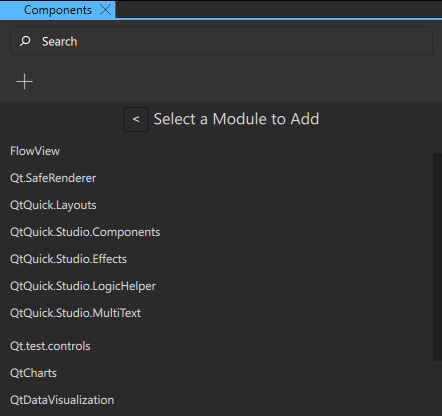
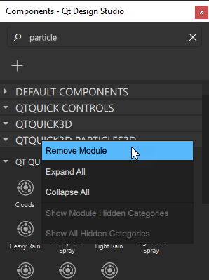
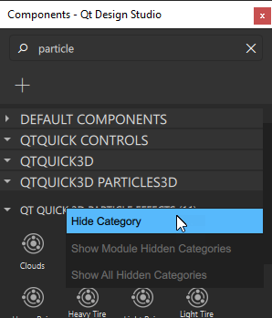

Components
The Component view lists the available components.

Components displays modules that have been added to your project. In many modules the components have been further organized into different categories. The modules contain visual components, such as basic shapes, UI controls, and 3D components, and add functionality to the project. All components have a type.
The UI controls can be styled to have the look and feel of a particular operating system, such as macOS, Windows, Android, or iOS.
Some modules have no visible components. For example, the Qt.Multimedia module adds support for audio and video files to your UI.
Component Types
You can add the following types of components to your project:
- Shapes
- Text
- Images
- UI Controls
- User Interaction Methods
- Lists and Other Data Models
- 2D Effects
- Logic Helpers
- Animations
- 3D Views
- Node
- Group
- Instanced Rendering
- Skeletal Animation
- 3D Models
- Materials and Shaders
- Textures
- 3D Materials
- 3D Effects
- Custom Shaders
- Lights
- Cameras
- Scene Environment
- Morph Target
- Repeater3D
- Particles
For more information about creating your own components, see Creating Custom Components.
Adding and Removing Modules
When you create projects, modules typically needed in them are added by default. For example, an empty application project contains basic components and UI controls, while a 3D application project contains additional 3D components.
To view the list of available modules, select  . Most commonly used modules are placed at the top of the list in alphabetical order. You can search for components and modules by entering search criteria in the Search field.
. Most commonly used modules are placed at the top of the list in alphabetical order. You can search for components and modules by entering search criteria in the Search field.
Select the module to add it to Components.

This adds an import statement to the component code that you can see in the Code view. For example, if you add the QtQuick.Controls module, the following import statement is added to the code: import QtQuick.Controls.
Since the added components and modules are packaged with your UI into the final application package, it is recommended that you select Remove Module to remove the ones you don't use in the project.
Context Menu Commands


To use the context menu commands in Components, right-click the name of a module or category and select one of the following commands:
- Remove Module: removes the module and all of its components from Components.
- Expand All: expands all the modules.
- Collapse All: collapses all the modules.
- Hide Category: hides the category from the module.
- Show Module Hidden Categories: shows the hidden categories of the module.
- Show All Hidden Categories: shows the hidden categories in all of the modules.
Note: The context menu commands for the Components categories do not function if you have entered something into the Search field. Clear the Search field to resume using the context menu commands.